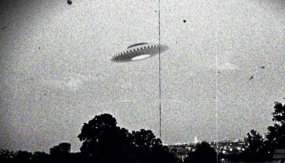

Continuação... Caso Ubatuba

O Caso Ubatuba, ocorrido em 1957, é um dos eventos mais antigos e intrigantes da ufologia brasileira. Aqui está um resumo completo:
Data e Localização:
O Caso Ubatuba ocorreu em setembro de 1957, na cidade costeira de Ubatuba, localizada no estado de São Paulo, Brasil.
O Incidente:
Na tarde de 14 de setembro de 1957, um objeto voador não identificado (OVNI) foi avistado sobrevoando o oceano próximo a Ubatuba. O objeto teria explodido em pleno ar, deixando cair destroços metálicos nas águas abaixo.
Recuperação dos Destroços:
Pescadores que testemunharam a explosão recuperaram alguns fragmentos dos destroços do objeto caído. Eles entregaram esses fragmentos a um jornal local, que posteriormente os encaminhou para análise.
Análise Científica:
Os fragmentos foram posteriormente examinados por cientistas brasileiros e internacionais. Análises preliminares sugeriram que o material era composto de uma substância metálica desconhecida, diferente de qualquer metal conhecido na Terra na época.
Relato do Geólogo:
O geólogo e ufólogo brasileiro, Dr. Olavo Fontes, foi uma das figuras-chave na investigação do Caso Ubatuba. Ele conduziu uma análise dos destroços e confirmou que o material era de origem desconhecida e possivelmente de origem extraterrestre.
Interesse Internacional:
O Caso Ubatuba atraiu a atenção da comunidade ufológica internacional e foi amplamente coberto pela imprensa brasileira e estrangeira na época. A descoberta dos destroços metálicos alimentou especulações sobre a presença de vida extraterrestre e tecnologia avançada visitando a Terra.
Continuidade do Mistério:
Apesar da análise inicial dos destroços, o Caso Ubatuba permanece envolto em mistério e controvérsia até hoje. Muitos aspectos do incidente, incluindo a natureza exata dos destroços e a verdadeira origem do objeto, ainda são objeto de debate entre os pesquisadores ufológicos.
O Caso Ubatuba é frequentemente citado como um dos casos mais importantes e bem documentados da história da ufologia brasileira, destacando o interesse contínuo na busca por respostas sobre a possível presença de vida extraterrestre em nosso planeta.
Esta página foi visitada 0 vezes. Última visita em: